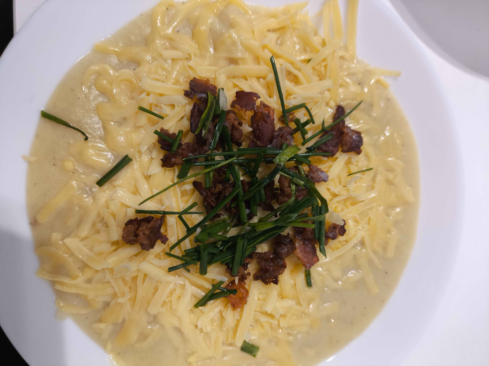

Back to Home
Loaded potato soup

Ingredients
- 1,5-2kg of large potatoes, peeled and diced
- 2 large onions, sliced
- 5-10 cloves of garlic, minced
- 100-200 g of bacon
- 20 g butter
- 3 tbsp of flour
- 500 ml of milk
- 1000 ml of vegetable/chicken broth or water + stock cube
- 250ml of heavy cream
- Salt and pepper to taste
- Chives or green onions for garnish
- Optional toppings: shredded cheese, cooked bacon bits, sour cream
Steps
- In a large pot cook the bacon over medium heat until crispy. Remove and set aside, leaving the fat.
- Add the butter and onions. Sauté until the onions are softened. Stir minced garlic and cook for another minute.
\
- Add the flour and stir until smooth. Cook for 1-2 minutes
- Gradually whisk in the milk, followed by the broth. Bring to a simmer and add the potatoes.
- Season with salt and pepper
- Add potatoes to the pot and bring to a boil. Cook until potatoes are fork tender
- Use a potato masher or immersion blender to blend the soup to your desired consistency.
- Serve hot, garnished with chives or green onions and your choice of toppings.